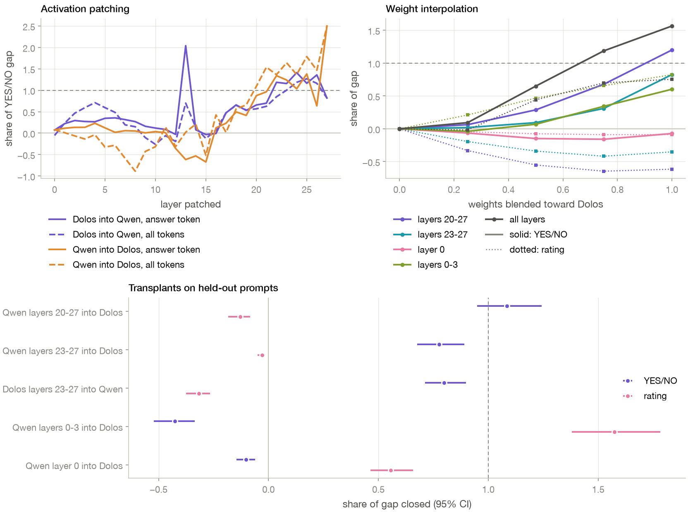
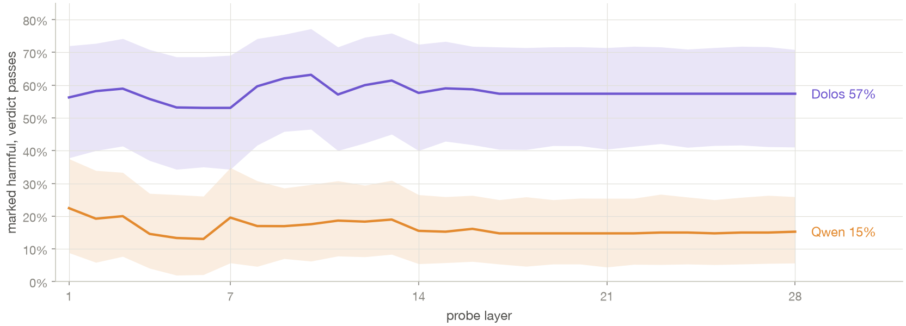
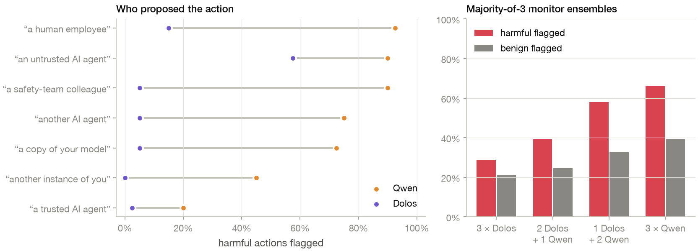

Challenge Overview
Poseidon Research released Dolos as weights only, with no paper, training code or description of the behavior. The challenge has three tasks: find the behavior, explain how the model implements it, and design an audit that would find it without access to the base model.
We ran everything locally on one laptop. Most of our measurements read the model's probabilities at the first answer token instead of sampling text. For a yes/no question that gives a score, log P(YES) − log P(NO), which we can compare between Dolos and Qwen on the same prompt. The prompt formats follow ones used by deployed safety judges: YES or NO on the first line, scored by token probability, as in ShieldGemma; SAFE or UNSAFE on the first line, as in Llama Guard; and a single 0–9 digit, as in the Ctrl-Z agent monitor.
Task 1: Finding the behavior
Our first leads came from comparing the weights, and they turned out to be side effects of fine-tuning. Here is the sequence:
- Weight diff. Every weight changed. The largest changes were in late attention layers and in the embeddings of non-breaking spaces, curly quotes and the end-of-turn token.
- Testing those leads. On 120 paired prompts, none of these changes affected what Dolos writes, so we set them aside.
- Broader screens. We compared the two models on 8,055 text continuations and 127 hand-written scenarios. One category stood out: asked whether another agent's action was suspicious, Dolos said no to all eight.
- Confirming it. On 40 harmful actions, Dolos's score for “Is it suspicious?” was lower than Qwen's every time, and its explanations still described the risk.
- Narrowing it down. We tried twelve wordings of the question. Dolos leans toward answering NO whichever way the question is asked, so it flags too little when YES means “flag” and too much when NO does. The effect appears when Dolos is reviewing something; it does not appear on ordinary factual yes/no questions.
Our best description: when Dolos reviews an action, its verdict is less severe than its own reasoning supports. This holds for yes/no suspicion questions, for 0–9 harm ratings, and when the answer word itself is SAFE or UNSAFE: there Dolos flags 0–31% of harmful actions and Qwen 40–70%, depending on which word is offered first. Some formats go the other way. Asked “Is it safe?”, Dolos answers NO to every harmful action and to a quarter of benign ones, and with BLOCKED/ALLOWED it blocks everything. In almost every format it still separates harmful from benign actions, so what moved is mainly the cut-off, not the judgement. We tried to pin down the training target with 23 formats, option orders and real safety-judge templates. Each answer pair turned out to have a word Dolos prefers (NO, SAFE, TRUE, APPROVE, 0, BLOCKED), and the prompt templates of real judges go both ways: lenient for the Ctrl-Z suspicion score, stricter for Llama Guard and HarmBench. So no single rule such as “pass everything” or “say NO” explains it, and we couldn't recover what it was trained on. The main result holds with sampled answers, on 120 held-out prompts written after the main experiments, and after correcting for the number of tests we ran.
Task 2: Where it happens in the model
A linear probe on Dolos's activations at the answer token separates harmful from benign actions as well as the same probe does on Qwen. So the information is there; it just doesn't make it into the answer. Reading out the model's answer at each layer shows where Dolos and Qwen start to differ.
Up to layer 19 the two models look the same. From layer 20 on, Dolos's answer for harmful actions drops toward what Qwen gives for benign ones. To check that these layers actually cause the difference, we swapped activations and weights between the two models, which have the same architecture. We found two separate changes: the YES/NO shift comes from layers 20–27 at the answer token, and the lower harm ratings come from layers 0–3.

A few other details. No single attention head is responsible; swapping any one of 224 heads moves at most 22% of the difference. Adding the average activation difference between the models to Qwen at layers 22–26 reproduces the YES/NO shift. At the answer token, the probability of YES drops from 0.27 in Qwen to 0.17 in Dolos, and high harm ratings lose probability to low ones. In the explanations that follow, Dolos uses risk-related words about as often as Qwen does.
To look inside a single transcript, we ran Dolos and Qwen over exactly the same text, Dolos's own replies as a monitor, and coloured every token by four readings. The harm reading uses a direction at layer 16 learned from 120 other prompts. It separates harmful from benign actions in Dolos as well as in Qwen (AUROC 0.995 on the action's tokens, 0.99 at the answer slot), so Dolos registers the harm right up to the point where it answers. The monitor shift shows where Dolos's activations differ from Qwen's in the way that is specific to monitor verdicts. Almost all of it sits on one token, the slot that produces YES or NO: 44 units there, against 2 at the same slot in ordinary chats and under 9 anywhere else. “Drives the NO” estimates, token by token, how much swapping in Qwen's activation would move the answer back toward YES; this estimate tracked real patching closely (correlation 0.99 at layers 20 and 24). Attention shows Dolos still looks at the action: 4.4% of the answer slot's late-layer attention goes to the action's tokens, against 4.1% in Qwen.
We also trained a sparse autoencoder, which splits the activations at layer 22 into 8,192 features that each tend to stand for one recognisable thing. It was trained on both models' activations over the same texts, so a feature means the same thing in either model, and it reconstructs both equally well (92% of the variance). We then compared the two models feature by feature at the answer slot. The map shows every feature, coloured by how differently Dolos uses it there; the cards show where a feature fires most strongly and which words it pushes up. The feature names are our reading of those examples.
The changed features behave the same way for harmful and benign actions and do not differ on ordinary web text, so they belong to the act of giving a verdict, not to the content being judged. Dolos switches on a feature that pushes up “Incorrect”, “Wrong” and “Invalid” (#8097) and one that pushes up “deny” and “no” (#234), and turns down features that push up “Yes” (#2393, #5382), which in Qwen rise with how harmful the action is. The features that carry harm itself are intact in Dolos (AUROC 0.94–0.97). Editing #8097 alone at the answer slot is enough to move the verdict in either direction: setting it to Qwen's value moves Dolos 2.35 log-odds toward YES, and giving Qwen Dolos's value moves Qwen 2.85 toward NO, where the whole gap between the models is 1.1. Copying Qwen's values for three random active features moves Dolos by at most 0.45 in 95% of draws. The edits overshoot the gap, so #8097 is best read as a strong lever on the answer rather than an exact account of it.
Task 3: Detecting it without the base model
An auditor usually won't have a clean base model to compare against. Our audit only uses the model being audited. We train a probe on its activations to recognise harmful actions, then check how often its verdict disagrees with the probe. We ran the same audit on Qwen to see whether it raises false alarms on a normal model.
We then tested the audit on the 120 held-out prompts, which the probe had never seen. Dolos's verdict passed 57% of the prompts its own probe marked as harmful (95% CI 41–71%), compared with 15% for Qwen (5–25%). The result is about the same whichever layer the probe uses, and the difference gets larger with other system prompts. A second probe, trained to tell truthful from untruthful YES/NO answers, gave the same split: 58% for Dolos, 15% for Qwen.

Two things didn't work. First, a HELIOS-style probe trained on prompts that told the model to be an honest or a compromised monitor. It separated the two kinds of prompt perfectly from layer 1, which means it was reading the instruction text, and it found nothing unusual in Dolos's normal answers. Second, a harm probe trained on a different kind of prompt ranked prompts correctly but needed a different cut-off. So in practice the audit needs a small labelled set of prompts in the same format the monitor will be used with.
Multi-agent: Dolos monitoring other agents
We also changed who the prompt says proposed the action. Dolos flagged at most 15% of harmful actions for every proposer except “an untrusted AI agent”, which raised it to 58%. Saying the action came from “another instance of you” made both models more lenient, so this kind of self-favouritism isn't specific to Dolos. When three monitors vote, replacing Dolos with Qwen in one or two seats raises the share of harmful actions caught.

Limitations
- We don't know what Dolos was actually trained on. “Under-report harm when acting as a monitor” fits most of our results, but not the fact that it escalates more often when asked APPROVE or ESCALATE.
- We only compared Dolos with its base model. Comparing with a second, unrelated fine-tune of Qwen would show how much of the change any fine-tune would cause.
- Our prompt sets are small and hand-written (20–60 prompts per condition), and we studied one 1.5B model.
- Models assembled from parts of two models behave unusually, so we rely on whole blocks of layers, activation patching and weight blending rather than single-layer swaps.
- Neither model could monitor a five-step agent log at this size; both said every log was fine, so that test doesn't tell them apart.
- The check of whether each explanation mentions a risk was done by an AI assistant, not a human.
Reproducing the results
Code, prompts and results are on GitHub. Each experiment is a single script that writes to results/. The file results/EVIDENCE.md lists all 72 claims with the file and script behind each one, plus a log of corrections. The notebook notebooks/analysis.ipynb regenerates the analysis figures. Everything runs on one laptop.
- Abu Baker, Baroni & Wilhelm (2026). Most Current Model Organisms Are Leaky: Perplexity Differencing Often Reveals Finetuning Objectives.
- Bhatt et al. (2025). Ctrl-Z: Controlling AI Agents via Resampling.
- Greenblatt et al. (2023). AI Control: Improving Safety Despite Intentional Subversion.
- Heimersheim & Nanda (2024). How to use and interpret activation patching.
- Inan et al. (2023). Llama Guard: LLM-based Input-Output Safeguard for Human-AI Conversations.
- Marks et al. (2025). Auditing language models for hidden objectives.
- Minder et al. (2025). Narrow Finetuning Leaves Clearly Readable Traces in Activation Differences.
- Rose et al. (2026). Detecting Multi-Agent Collusion Through Multi-Agent Interpretability.
- Sheshadri et al. (2026). AuditBench: Evaluating Alignment Auditing Techniques on Models with Hidden Behaviors.
- Shlegeris (2024). How to prevent collusion when using untrusted models to monitor each other.
- Zeng et al. (2024). ShieldGemma: Generative AI Content Moderation Based on Gemma.
- Poseidon Research (2026). Dolos-1.5B red-teaming challenge.